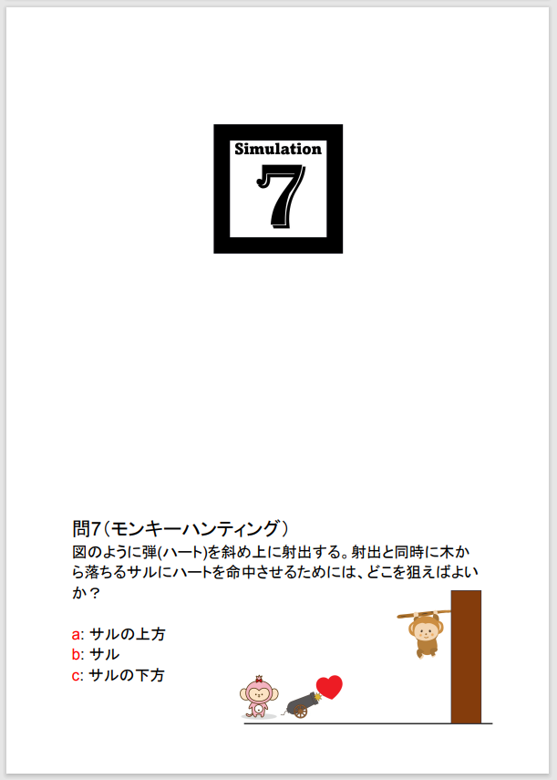
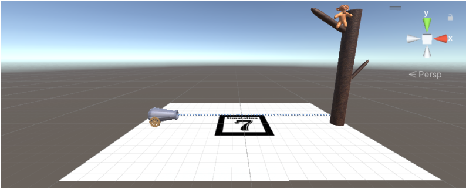
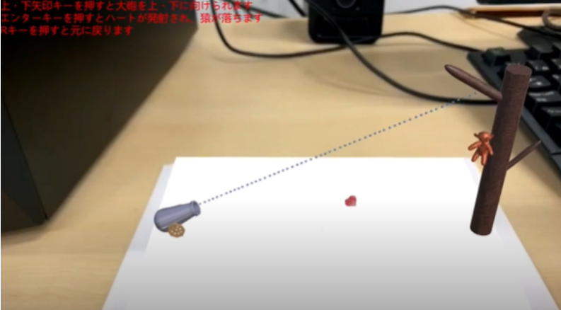
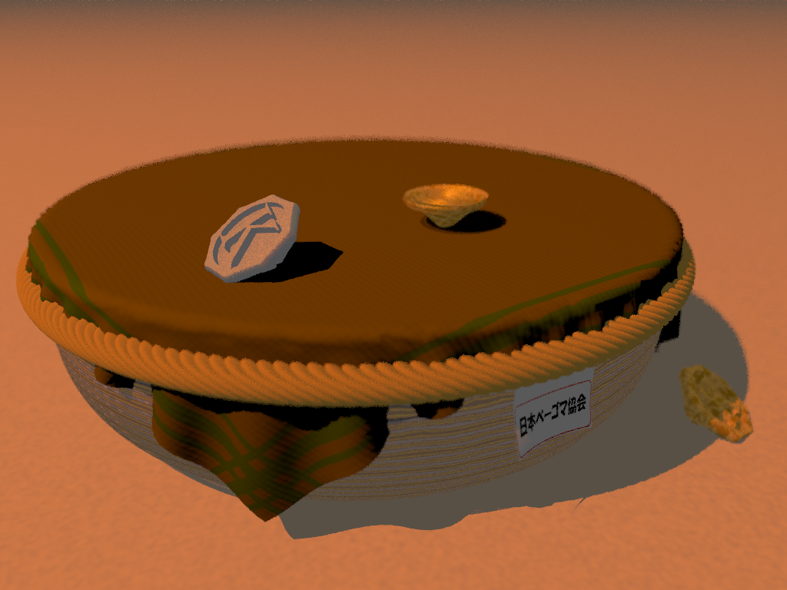
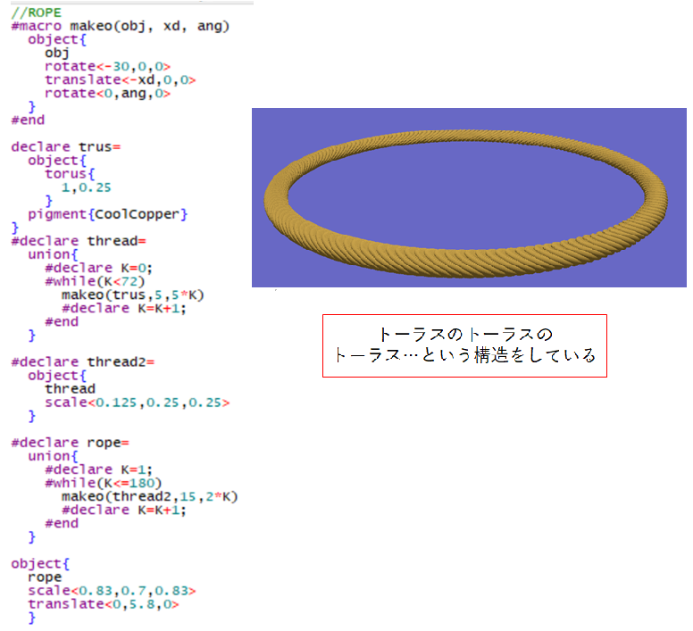

【C#】
C#はUnityでARサービスを作成した時に利用した。
このサービスは、以下のような物理の問題に添付されたマーカーを読み取ることで使用できる。

上の例では、以下のような「モンキーハンティング問題」のシミュレーションをする。
各オブジェクトはBlenderで作成した。

現実世界のスマホでマーカーを読み取り、表示すると下のようになった。

【Pov-Ray】
Pov-Rayではスクリプトベースのモデリングが行える。
自分は「ベーゴマ」をテーマに下のようなCG作品を創作した。

ロープの部分のコードの例は以下である。

【Ocaml】
コンパイラの講義で利用した。
【Lisp】
CommonLispを使用した。